SILKROAD FOUNDATION |
|
SILKROAD FOUNDATION |
|

Document Info.
1. 문서 개요 이 문서는 소프트웨어 개발 통합관리 솔루션인 SILKROAD의 사용자 매뉴얼이다. 2. 권장 사항 이 매뉴얼은 SILKROAD를 이용하여 요구사항관리 시스템 사용자들을 위해 제작되었다. 3. 연락처 SILKROAD 사용 및 관련 기술지원에 대한 사항은 E-mail 및 유선을 통해 문의 바랍니다. E-mail : Info@nsetec.com / Tel : +82-42-867-5800 4. 문서 개정 이력
|
Contents
1. Workflow 개요 1
1.1 워크플로우 템플릿 2
1.1.1 워크플로우 템플릿 목록 3
2. Work Assignment 워크플로우 모델링 4
2.1 워크플로우 화면 구성(Flow탭) 4
2.1.1 워크플로우 창 5
2.1.2 워크플로우 상태값 설정 (Process Status Settings) 6
2.2 워크플로우 생성 7
2.2.1 Add Workflow 창 8
2.3 워크플로우 디자인 9
2.3.1 Activity 생성 9
2.3.1.1 Activity 창 10
2.3.2 Flow 생성 11
2.3.2.1 Flow 창 12
2.3.3 담당자(Participant) 설정 13
2.3.3.1 Participant 창 14
2.3.3.1.1 가변성 필드 목록 15
2.3.4 워크플로우 매크로 16
2.3.4.1 매크로 설정 16
2.4 워크플로우 적용 17
2.4.1 Settings 모듈 연계 - 워크플로우 적용 17
2.4.2 Default 워크플로우 설정 18
3. 워크플로우 실행 19
3.1 워크플로우 실행 절차 19
3.1.1 Activate Workflow 자동 실행 메뉴 현황 20
3.2 워크플로우 실행 예시 (Configuration 모듈 Change Request) 21
3.2.1 Configuration - Baseline과 Baseline Version 생성 21
3.2.2 Change Request 생성 22
3.2.3 Change Request 워크플로우 구성 22
3.2.4 워크플로우 실행 23
3.2.5 서브 워크플로우(Sub Workflow) - Sequential Flow 인 경우 24
3.2.6 워크플로우 리셋 27
4. Work Approval 워크플로우 28
4.1 Work Approval 워크플로우 생성 28
5. 워크플로우 현황 관리 29
5.1 To-do List 29
5.2 워크플로우 진행 알림(Receive E-mail) 29
5.3 워크플로우 진행 현황 관리(Status 탭) 30
6. 오류메시지 목록 31
SILKROAD 워크플로우 (Workflow)는 설정된 업무 프로세스에 따라 담당자에게 할당할 수 있으며, 담당자 별로 워크플로우를 통해 할당된 업무는 To-do List에 생성된다. 또한 수행되는 업무에 대한 작업이 어떻게 실행되고 누가 수행하고 있는지 추적할 수 있다. SILKROAD에서 제공하는 워크플로우 타입은 2가지이다.
① Work Assignment : 담당자가 편집권한을 가지는 프로세스
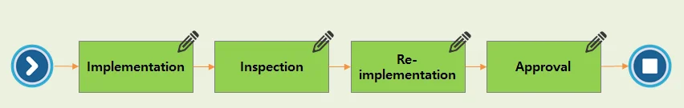 |
② Work Approval : 편집 권한 없이 단순한 업무 승인(결제 라인) 프로세스
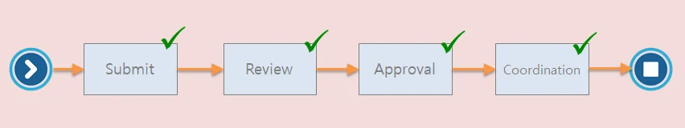 |
워크플로우는 각 모듈에서 사용될 기본 템플릿을 제공하고 있다. 새 프로젝트 생성 시 지정된 템플릿을 기본값으로 적용한다. 제공하는 템플릿은 아래의 표를 참고한다. 제공된 템플릿을 사용하여 워크플로우 모델링을 할 수 있으며, 워크플로우 템플릿 관리는 시스템 관리자(Administrator)만 가능하다.
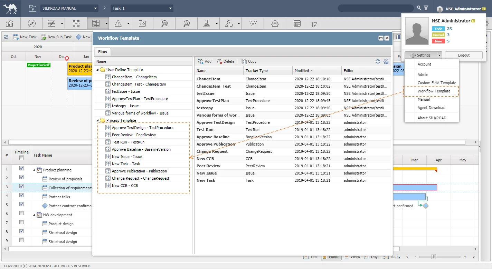 |
시스템 관리자 메뉴인 Workflow Template는 계정 이름 클릭 - Settings - Workflow Template에서 확인할 수 있다. |
번호 | 트래커 | 설명 |
| Approve Baseline | Configuration 모듈의 Baseline을 승인할 때 사용한다. |
| Approve Publication | DOCS를 실행하여 사용하는 단위 시스템 (요구사항관리시스템, 계획관리 시스템-Plan모듈, 기능관리 시스템) 에서 문서 생성 승인 요청 및 요구사항 변경 요청 시 사용한다. |
| Approve Test Design | Test Procedure 문서를 승인할 때 사용한다. |
| Change Request | Configuration 모듈의 Change Request(CR) 생성 및 Change Request를 처리할 때 사용한다. |
| New CCB | Configuration 모듈의 Change Control Board(CCB) 생성 및 Change Control Board 를 처리할 때 사용한다. |
| New Issue | 새로운 Issue 생성 및 업무를 처리할 때 사용한다. |
New Task | 새로운 Task 생성 및 업무를 처리할 때 사용한다. | |
New Peer Review | 피어리뷰 시작 및 종료할 때 사용한다. | |
| Test Run | 테스트 수행 시 사용한다. |
① 워크플로우 버튼을 클릭하여 ‘Workflow’ 창을 생성한다.
|
|
구분 | 명칭 | 설명 |
| Flow 탭 | 해당 프로젝트에 생성된 워크플로우 목록 |
| Workflow List | 현재 프로젝트에 생성된 Work Assignment, Work Approval 워크플로우 목록 |
| Add/Delete | 워크플로우 생성, 삭제 |
| Copy | 워크플로우 복사, 템플릿 생성 |
| Refresh | 워크플로우 창 새로고침 |
| Process Settings | 관리자 기능으로 워크플로우 모델링 시 사용할 상태값 설정 |
워크플로우 Activity 진행 시 표시될 워크플로우 상태(Status) 값을 설정한다.
① Workflow 창에서 설정 아이콘을 클릭한다.
② ‘Add’ 버튼을 클릭한다.
③ 추가할 Status를 ‘Value’에 입력한 후 워크플로우 타입을 선택한다.
④ ‘Update’ 버튼을 클릭한다.
⑤ ‘OK’ 버튼을 클릭하여 저장한다.
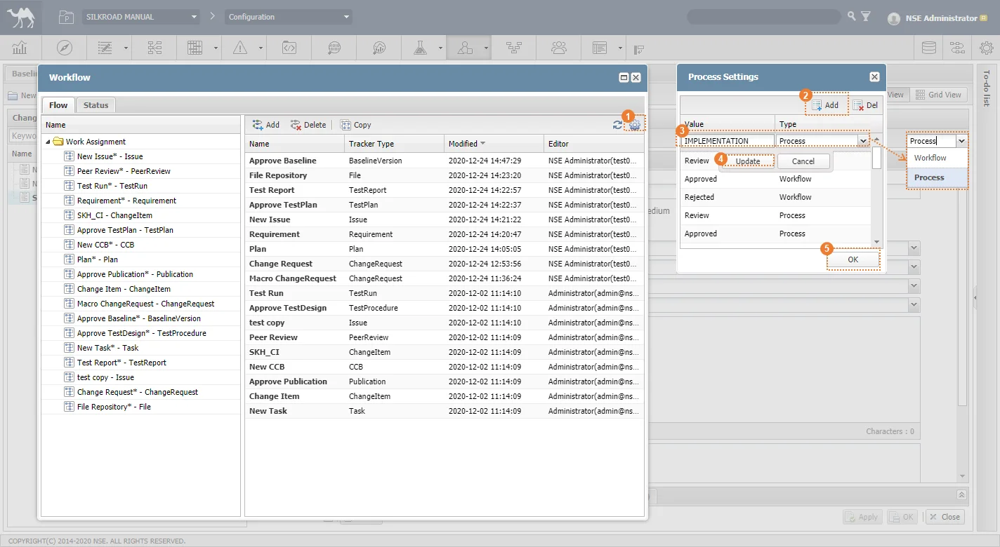 |
⑥ Workflow Activity 생성 또는 편집 시 ‘Status’ 탭에 생성한 Status가 표시된다.
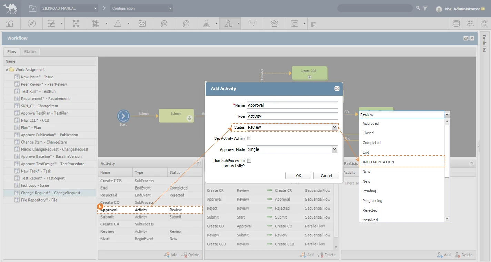 |
Status의 ‘Type : Process’ 는 ‘Work Assignment’에 사용되며 ‘Type : Workflow’는 ‘Work Approval’에 사용된다. |
① Work Assignment 폴더를 선택한다.
② ‘Add’ 버튼을 클릭한다.
③ ‘Name’, ‘Type’, ‘Tracker’ 등 입력 또는 체크한다.
④ ‘OK’ 버튼을 클릭하여 생성한다.
|
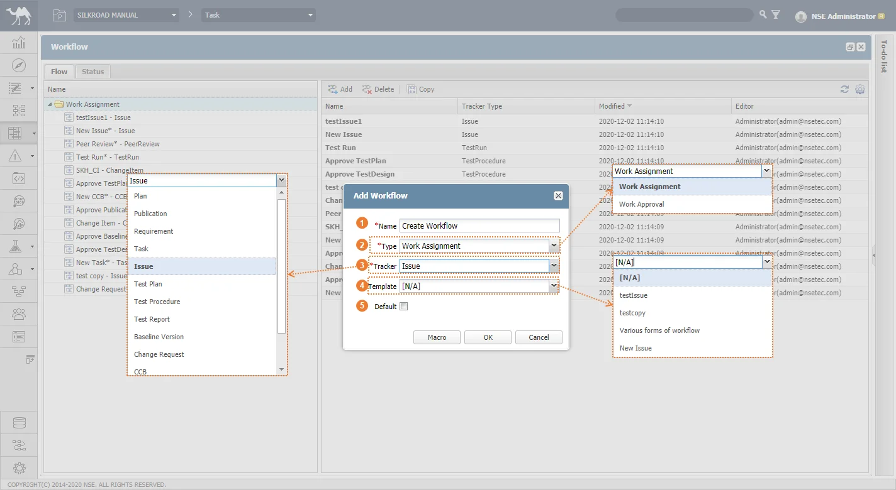 |
구분 | 명칭 | 설명 |
| Name | 워크플로우 명 |
| Type | Work Assignment 또는 Work Approval 선택 |
| Tracker | 워크플로우가 적용될 SILKROAD 단위 시스템 |
| Template | SILKROAD 기본 워크플로우 템플릿 |
| Default | 선택한 ‘Tracker’ 의 기본 워크플로우로 자동 설정 |
워크플로우를 수정하고자 하는 경우, 수정할 워크플로우를 더블클릭하면 수정할 수 있다. 워크플로우를 삭제하고자 하는 경우, 삭제할 워크플로우를 선택하고 ‘Delete’ 버튼을 클릭하면 삭제할 수 있다. |
① Activity를 생성할 워크플로우를 좌측 목록에서 클릭한다.
② ‘Activity’ 영역의 ‘Add’ 버튼을 클릭한다.
③ Name 항목(필수)과 나머지 항목을 입력 또는 선택한다.
④ OK 버튼을 클릭한다.
|
Activity를 수정하고자 하는 경우, 수정할 Activity를 더블클릭하면 수정할 수 있다. Activity를 삭제하고자 하는 경우, 삭제할 Activity를 선택하고 ‘Delete’ 버튼을 클릭하면 삭제할 수 있다. Sub Workflow 생성은 Activity 생성 시 Type을 ‘Sub Workflow’로 선택하며 독립적인 워크플로우를 실행할 수 있는 특징이 있다. |
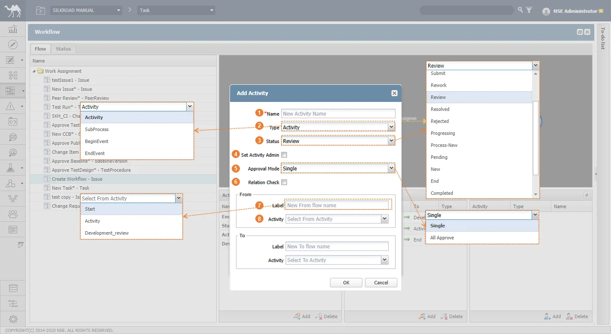 |
번호 | 명칭 | 설명 | |
| Name | 업무 이름 | |
| Type | 업무 종류 (Activity, BeginEvent, EndEvent, Sub Process) | |
| Status | 해당 업무 단계에서 Work Item의 상태 | |
| Set Activity Admin | 해당 Assignee 에게 SILKROAD 아이템의 편집 권한을 ‘관리자’로 부여함. | |
| Approval Mode | Activity에 참여된 사용자의 단독/합의 결제 결과에 따른 진행 방법 설정 | |
| Relation Check | 워크플로우 진행 전, Relation으로 연결된 서브 이슈가 있는 경우 서브 이슈 워크플로우가 종료되었는지 체크함. | |
Flow | Label | 이전(From)/다음(To) 업무와 해당 업무의 흐름(Flow)명 | |
| Activity | 이전(From)/다음(To) 업무 | |
① Flow를 생성할 워크플로우를 좌측 목록에서 클릭한다.
② ‘Flow’ 영역의 ‘Add’ 버튼을 클릭한다.
③ Label, From, To 항목(필수)과 나머지 항목을 입력 또는 선택한다.
④ ‘OK’ 버튼을 클릭한다.
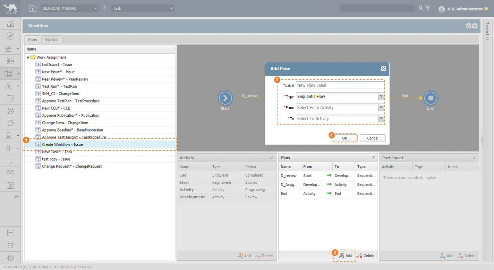 |
Flow 수정은 해당 Flow를 더블클릭하여 수정할 수 있다. Flow 삭제는 해당 Flow를 선택한 후 Delete 버튼을 클릭하여 삭제할 수 있다. Approval Mode가 설정된 Activity를 From으로 설정한 Flow 는 All Approve 옵션이 제공된다. 체크 박스를 체크 시 결제 담당자 모두 동일한 Flow를 선택한 때 해당 Flow를 진행한다. 일치하지 않는 Flow를 선택할 경우 해당 Flow를 진행한다. |
|
구분 | 명칭 | 설명 | |
| Label | Flow 이름 | |
| Type | - Sequential Flow : 순차적으로 진행하는 흐름, Sub Workflow 존재 시 Sub Workflow가 끝나야 다음 워크플로우 진행할 수 있음 - Parallel Flow : 다음 업무가 Sub Workflow 로 존재할 때 독립적으로 진행하는 흐름 | |
| From/To | 대상 Activity를 기준으로 이전 Activity/현재 Activity 두 Activity를 Flow 라는 흐름으로 연결함. | |
| All Approve | Approval Mode가 적용된 Activity를 From 지정하는 경우 옵션 제공. 결제 담당자 모두 동일한 Flow를 선택 할 때 진행 | |
생성한 Activity 에 대한 담당자를 미리 지정할 수 있다. 워크플로우를 진행하여 담당자를 지정한 특정 Activity에 도달하는 경우 자동으로 ‘Assignee’ 필드에 담당자가 추가되어있다.
① ‘Add’ 버튼을 클릭합니다.
② ‘Activity’, ‘Type’선택과 선택한 ‘Type’ 필드에 따라 생성되는 필드(ex.Group)를 선택한다.
③ ‘OK’ 버튼을 클릭하여 저장한다.
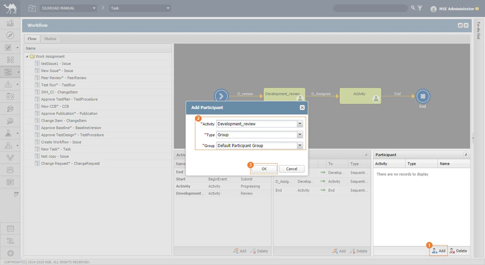 |
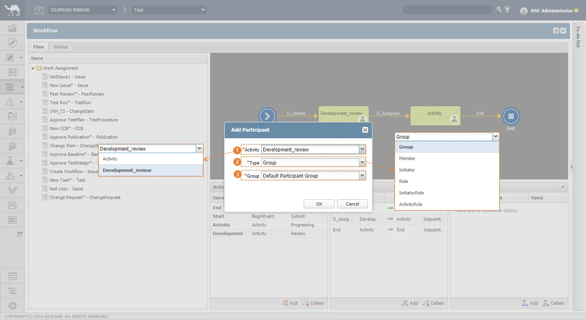 |
구분 | 명칭 | 설명 | |
| Activity | 현재 생성되어 있는 업무(Activity) 목록 | |
| Type | 해당 업무(Activity)를 담당할 담당자 유형 | |
| Group(가변성 필드) | 선택한 Type에 따라 담당자 선택 (Type 선택 시 유형에 맞는 담당자 목록으로 필드의 명과 값이 변경됨) | |
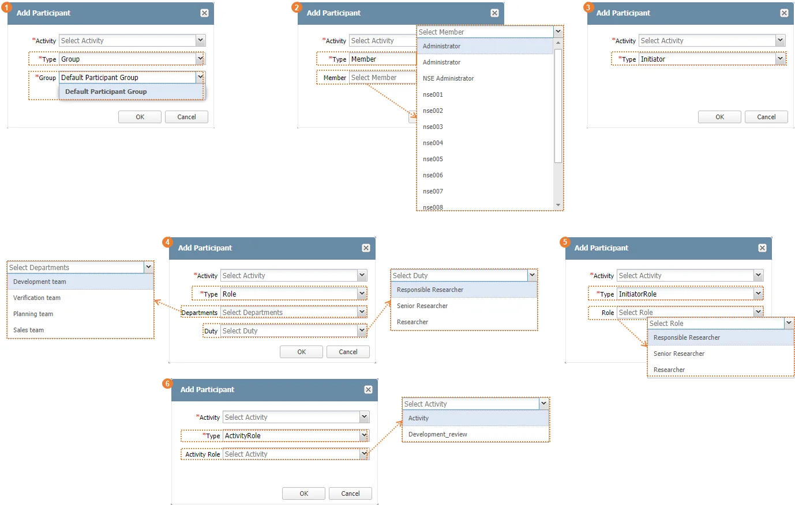 |
구분 | 명칭 | 설명 | ||
| Group | 프로젝트 참여자 그룹 목록 - ‘Settings’모듈 - ‘Participant’ 탭 그룹과 연관 | ||
| Member | 프로젝트 참여자 목록 - ‘Settings’모듈 - ‘Participant’ 탭 참여자 목록과 연관 | ||
| Initiator | SILKROAD 내 아이템 생성자 | ||
| Role | Department | 직위/직급 - ‘Admin’의 - ‘Member’ 탭에서 직위/직급과 연관 | |
Duty | ||||
| Initiator Role | 직급 - ‘Admin’의 - ‘Member’ 탭에서 직급과 연관 | ||
| Activity Role | 현재 워크플로우에 존재하는 Activity 목록 | ||
조건을 작성하여 Work Item이 생성될 때 조건에 부합하는 경우 기본 워크플로우가 아닌 특정 워크플로우로 변경되어 워크플로우를 진행할 수 있다.
① 매크로를 설정할 워크플로우를 더블클릭한다.
② ‘Macro’ 버튼을 클릭한다.
③ 매크로 수식을 입력한다.
④ ‘OK’ 버튼을 클릭하여 워크플로우 수정사항을 저장한다.
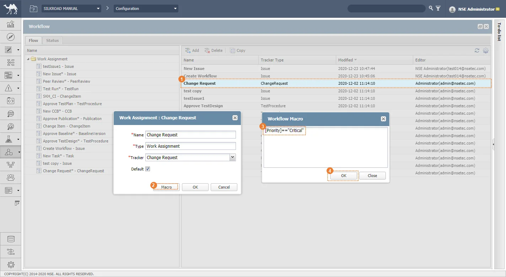 |
Settings 모듈에서 특정 모듈에서 사용할 워크플로우를 적용한다.
① SILKROAD 웹 ‘ ’ 클릭하여 Settings 창을 생성한다.
’ 클릭하여 Settings 창을 생성한다.
② Workflow Setting 탭을 클릭한다.
③ 모듈의 Workflow 영역을 클릭하여 적용할 워크플로우를 선택한다.
④ OK 버튼을 클릭한다.
|
워크플로우에서 지정한 트래커 타입인 모듈에 워크플로우 기본 값을 설정한다. 적용 대상은 ‘Setting’ 모듈에서 워크플로우 개별 설정을 하지 않은 워크플로우 한해서만 기본 값이 적용된다. 즉 사용자가 설정한 워크플로우는 기본 값으로 변경되지 않는다.
① ‘Workflow’ 버튼을 클릭한다.
② Flow 탭 워크플로우 목록에서 Default 워크플로우를 설정할 워크플로우를 더블클릭한다.
③ ‘Default Workflow’ 체크박스를 체크한다.
④ ‘OK’ 버튼을 클릭하여 저장한다.
|
Task, Issue, 요구사항 문서 등과 같은 Work Item에 Workflow를 적용시켜 프로젝트 별로 설정된 프로세스에 따라 절차를 진행할 수 있다.
워크플로우의 실행 절차는 다음과 같다. 아래의 절차를 거쳐 Work Item 의 워크플로우를 실행하고 종료한다.
① Workflow 시작 - ‘Active Workflow’
② 디자인 된 워크플로우에 따라 워크플로우 Activity 절차를 수행
③ Workflow 종료
④ Workflow Reset(관리자 기능)
Approval Mode를 적용한 경우 Work flow Process Assignee 로 지정된 모든 담당자가 동일한 Flow를 선택 할 때 해당 Flow를 진행한다.
① Workflow 시작 – Activity 에 Approval Mode 적용, Flow에 All Approval 옵션 체크
② 결제 담당자는 디자인 된 워크플로우에 따라 Next Flow로 A 선택
③ 모든 결제자가 A Flow 선택 시 A Flow 진행, 일부라도 B Flow 선택 시 B Flow 진행
④ Workflow 종료
⑤ Workflow Reset(관리자 기능), Forced Decision(Worfkflow 강제 진행 : 메뉴 권한 ‘Administrator’)
Issue, Change Request, CCB Work Item 생성 시 OK 버튼을 클릭하여 생성하는 경우 ‘Active Workflow’ 가 자동으로 실행된다. Issue, Change Request, CCB Work Item 생성 시 Apply 버튼을 클릭하여 생성하는 경우 ‘Active Workflow’ 가 자동으로 실행되지 않는다. Workflow에 기본 워크플로우가 없는 경우 별도로 워크플로우를 생성해야 한다. |
번호 | 트래커 | Activate Workflow 자동 실행 여부 | |
① | Plan | 실행 X | |
② | Publication | 실행 X | |
③ | Requirement | 실행 X | |
④ | Task | 실행 X | |
⑤ | Test Plan | 실행 X | |
⑥ | Test Procedure | 실행 X | |
⑦ | Test Report | 실행 X | |
⑧ | Baseline Version | 실행 X | |
⑨ | Change Item | 실행 X | |
⑩ | File Repository | 실행 X | |
⑪ | Issue | 실행 O | |
⑫ | Change Request | 실행 O | |
⑬ | CCB | 실행 O | |
워크플로우 실행 관련하여 Configuration 모듈의 Change Request 워크플로우를 예로 절차를 진행한다.
① Configuration 모듈을 클릭한다.
② ‘New Baseline’ 버튼을 클릭한 후 ‘OK’ 버튼을 클릭하여 베이스라인을 생성한다.
③ 생성한 Baseline을 선택한 후 ‘New Version’ 버튼을 클릭한 후 ‘OK’ 버튼을 클릭하여 버전을 생성한다.
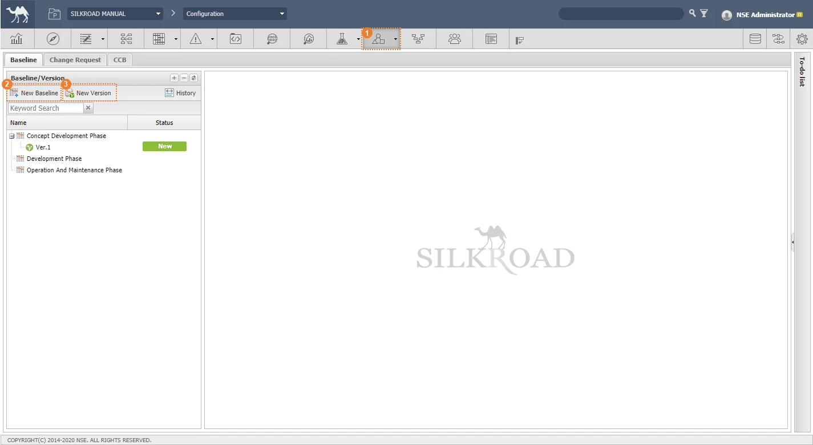 |
CR 워크플로우 실행 확인을 위한 준비 단계로 기존에 생성한 Baseline과 Version이 있는 경우 추가로 베이스라인과 버전을 생성하지 않도록 한다. |
① ‘Change Request’ 탭을 클릭한다.
② ‘New Change Request’ 버튼을 클릭한 후 ‘OK’ 버튼을 클릭하여 CR을 생성한다.
|
① Workflow Display : 워크플로우 디자인을 보여주는 화면
② Begin Event : 워크플로우 시작
③ Activity : 워크플로우 절차
④ Sequential Flow : 워크플로우 수행선. 종속적
⑤ Parallel Flow : 워크플로우 수행선. 독립적
⑥ End Event : 워크플로우 종료
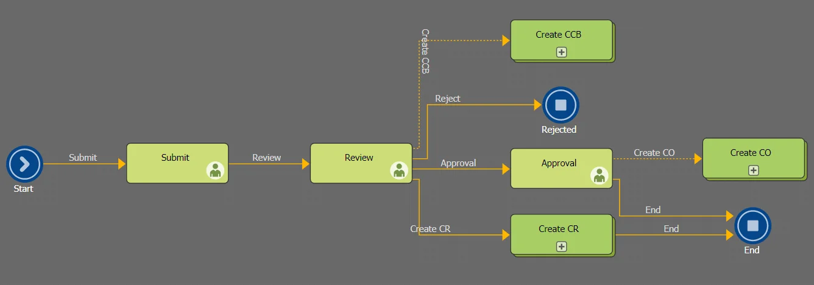 |
워크플로우 유형 설명을 위해 CR Workflow는 위의 디자인과 동일하게 모델링을 한다. |
① 생성한 CR을 클릭한다.
② Workflow 버튼을 클릭한다.
③ Workflow Display를 참고하여 ‘Next’ 의 단계를 선택한다.
④ ‘Assignee’를 선택한다.
⑤ ‘Comment’를 작성한다.
⑥ ‘Assignment’를 클릭하여 워크플로우를 다음단계로 진행한다.
⑦ 해당 절차를 반복하여 End Event 까지 도달 시 워크플로우가 종료된다.
|
CR 생성 시 OK 버튼을 클릭하여 생성하였으므로 ‘Active Workflow’ 단계는 생략되어 있다. |
기준이 되는 메인 워크플로우에 다른 워크플로우를 서브 워크플로우로 삽입하여 생성할 수 있다. 서브 워크플로우 실행 시 메인 워크플로우와 연결되며 Work Item을 생성하게 된다. 생성된 Work Item는 독립적으로 워크플로우를 실행할 수 있다.
① CR 워크플로우의 ‘Review’ Activity 까지 도달한 상태에서 ‘Next’ 값을 ‘Create CR’ 로 선택한다.
② 생성될 Work Item 이 존재할 모듈을 선택한다.
③ ‘Assignment’ 버튼을 클릭한다.
|
④ 메인 프로세스와 Relation 이 생성된다.
⑤ ‘OK’ 버튼을 클릭하여 서브 Work Item을 생성한다.
|
⑥ 메인 Work Item의 Workflow 창을 실행하면 워크플로우를 진행할 수 없는 상태가 된다.
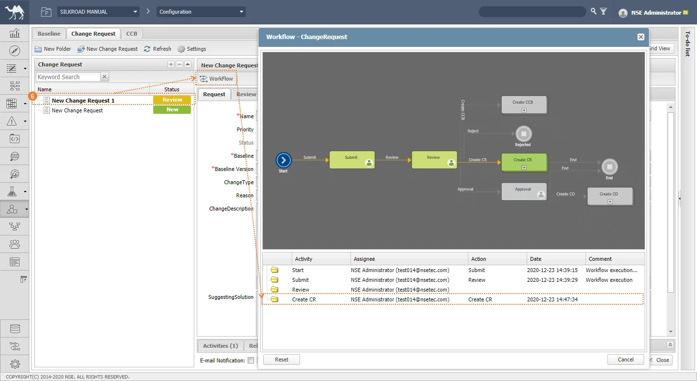 |
⑦ 서브 Work Item 의 워크플로우 창을 실행하여 ‘End’ 단계까지 워크플로우를 진행하여 워크플로우를 종료시킨다.
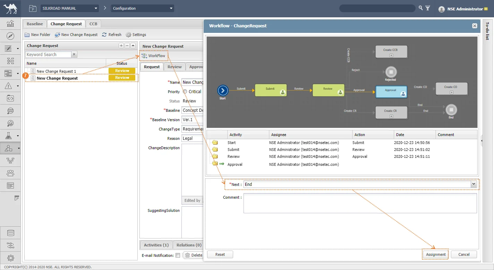 |
⑧ 메인 Work Item의 워크플로우 실행 시 다음 Flow 로 진행할 수 있는 상태가 되며, 서브 Work Item 의 워크플로우 종료 정보가 메인 Work Item 의 워크플로우에 보인다.
⑨ 다음 Flow를 선택한 후 Assignment를 클릭하여 메인 Work Item 워크플로우를 진행한다.
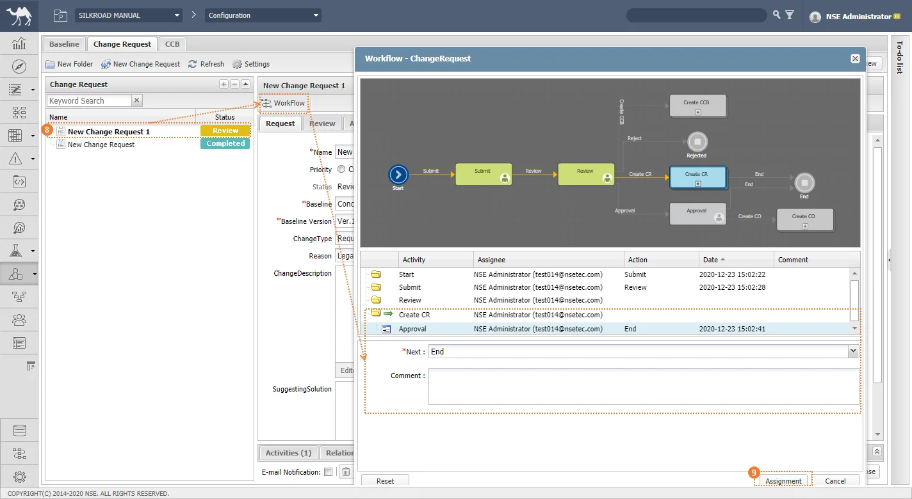 |
Sequential Flow로 생성된 서브 Work Item인 경우, 서브 Work Item의 워크플로우를 완전히 종료시킨 뒤에 메인 Work Item 워크플로우를 진행할 수 있다. Parallel Flow로 생성된 서브 Work Item인 경우 메인 Work Item 워크플로우와 독립되어 생성되므로 생성된 서브 Work Item 워크플로우 종료 여부에 영향받지 않는다. |
① 워크플로우를 리셋할 ChangeRequest을 클릭한 후 Workflow 버튼을 클릭하여 실행한다.
② 워크플로우 창 ‘Reset’ 버튼을 클릭한다.
③ Change Request 워크플로우가 초기화되어 ‘Status’ 상태가 ‘Reset’ 상태로 표시된다.
|
Work Approval 워크플로우는 Work Assignment 워크플로우의 서브 워크플로우로 생성하여 실행이 가능하다. 즉 특정 Activity 내에서 ‘Approval(승인)’을 받기위해 별도의 Assignee 없이 워크플로우만 진행한다.
① Workflow 창에서 ‘Add’ 버튼을 클릭한다.
② ‘Name’을 입력하고 ‘Type’을 ‘Work Approval’ 로 선택한다.
③ ‘OK’ 버튼을 클릭하여 생성한다.
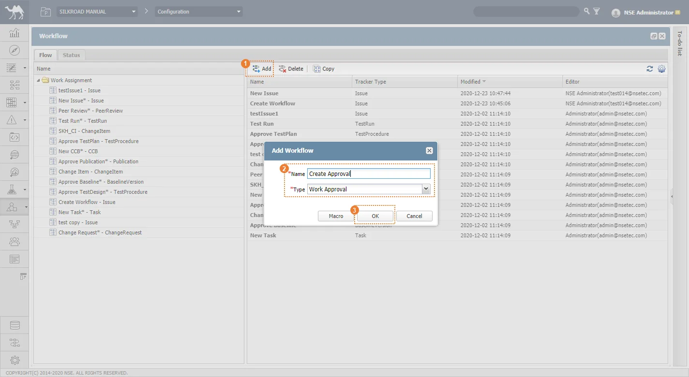 |
Work Approval 모델링은 Work Assignment 와 동일하다. Work Approval 의 사용은 Work Assignment 의 Sub Workflow로 추가하여 생성한다. |
Work Item 의 워크플로우를 수행하여 담당자로 할당받은 경우 ‘To-do list’에서 할당된 업무를 프로젝트 접근하지 않고 바로 관리할 수 있다.
|
워크플로우 진행 시 Assignment 로 할당 받은 경우 사용자 계정 이메일로 알림 이메일이 발송된다.
|
프로젝트의 Workflow 진행 상황을 모니터링 한다. 현재 프로젝트 내에서 활성화되어 진행중인 워크플로우와 종료되거나 리셋된 이력이 있는 아이템의 워크플로우 타입으로 분류된다.
① Workflow Settings 아이콘을 클릭한다.
② Status 탭을 클릭한다.
③ 워크플로우 현황에서 차트를 클릭한다.
④ 해당 모듈과 관련된 진행중 워크플로우와 종료된 또는 리셋된 워크플로우 이력이 보인다.
⑤ 워크플로우 목록을 더블클릭 시 워크플로우에 대한 상세 내용을 확인할 수 있다.
|
번호 | 메시지 | 설명 | 해결방안 |
|---|---|---|---|
1 | |||
2 | |||
3 | |||
4 | |||
5 | |||
6 | |||
7 | |||
8 | |||
9 |
| |
| 5F Convergence Technology Research Commercialization Center, 218 Gajeong-ro, Yuseong-gu, Daejeon, 305-700, Rep. of Korea TEL. +82 42 867 5800 FAX. +82 70 7805 8058 Info@nsetec.com |